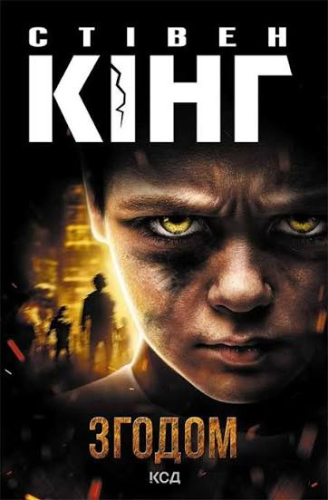

Згодом
Опис
У цій історії багато жаху. Захистіть і ви! Джеймі — в усьому звичайний хлопчик зі звичайної неповної сім'ї, крім одного. Він бачить мертвих і може розмовляти з ними. До того ж покійники мусять завжди чесно відповідати на його запитання. Мама наказувала нікому не розповідати про цю моторошну здатність, проте зберегти таємницю не вдалося. Відчайдушна детективка, мамина подруга, планує розкрити справу зловісного нью-йоркського терориста з допомогою хлопчика. Убивця вже відійшов у засвіти, а його бомба цокає десь у місті й ось-ось збере кривавий урожай. Джеймі може дізнатися, де він її заховав. Але цей мрець не схожий на інших...
Відгук автора сайту
«Зворушлива і водночас лякаюча розповідь про хлопчика, який бачить мертвих, що змушує задуматися про ціну дорослішання. Автор знову доводить, що справжні монстри часто ховаються серед звичайних людей.»